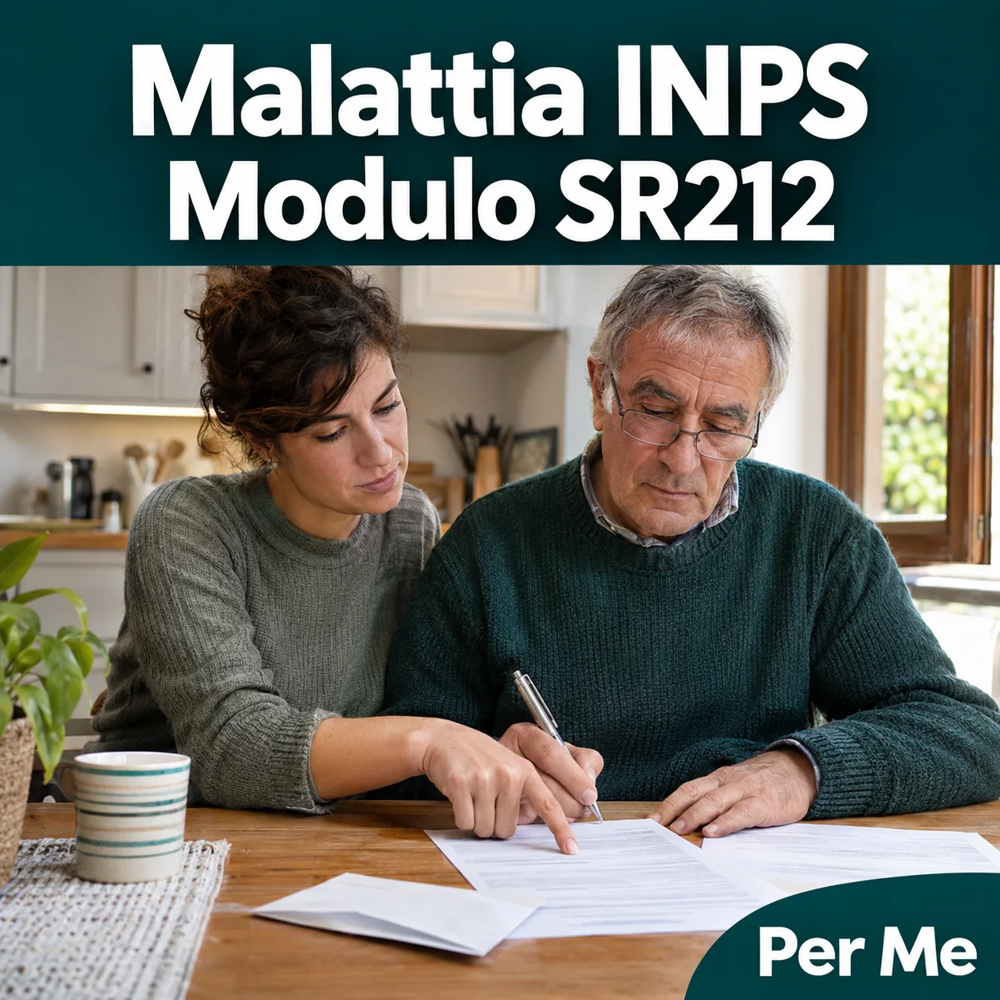

NOTIZIE UTILI · LAVORO E INPS · ITALIA
Malattia pagata dall’INPS: come usare il modulo SR212 senza identità digitale
Pubblicato e verificato il
Se hai diritto all’indennità di malattia pagata direttamente dall’INPS e sei senza identità digitale, puoi comunicare i dati della pratica con il modulo cartaceo SR212. La possibilità è prevista in via eccezionale e transitoria.

L’Istituto nazionale della previdenza sociale (INPS) ha annunciato il rilascio del modulo nella notizia del 4 novembre 2026, richiamando il messaggio n. 3484 del 29 ottobre. Prima di procedere, verifica chi deve pagare l’indennità nel tuo caso.
Quando la malattia viene pagata direttamente dall’INPS
Quando un problema di salute ti impedisce temporaneamente di lavorare, puoi avere diritto all’indennità di malattia secondo le regole del tuo rapporto di lavoro. Generalmente il datore di lavoro la anticipa insieme alla retribuzione; in alcune situazioni è l’INPS a pagarla direttamente al lavoratore.
Tra le situazioni indicate dall’Istituto ci sono gli operai agricoli a tempo determinato, alcune categorie di lavoratori dello spettacolo e determinati casi di disoccupazione o sospensione dal lavoro. Sono esempi: il diritto dipende anche dalla posizione assicurativa, dal rapporto di lavoro e dalle date interessate. Fonte: scheda INPS sull’indennità di malattia.
Per gli apprendisti si applica la disciplina della malattia del settore di appartenenza. Anche per loro l’uso del modulo richiede le condizioni del pagamento diretto e l’assenza di identità digitale. Se hai dubbi sulla tua situazione, chiedi una verifica alla sede INPS competente.
Per controllare le assenze e le voci del cedolino puoi affiancare questa notizia alla guida su ore, ferie, permessi e malattia.
A chi è riservato il modulo SR212
Il modulo cartaceo è utilizzabile esclusivamente dai lavoratori privi di identità digitale, in via eccezionale e transitoria. Il diritto all’indennità viene verificato dall’INPS sulla base dei requisiti della prestazione.
L’identità digitale è lo strumento personale con cui accedi ai servizi online. Per lo sportello INPS sono ammesse, tra le altre, le credenziali del Sistema pubblico di identità digitale (SPID), la Carta d’identità elettronica (CIE) e la Carta nazionale dei servizi (CNS).
Come preparare il modulo e gli allegati
Apri la sezione Moduli del portale INPS e cerca il codice SR212.
Apri i moduli INPS e cerca SR212
Scarica la versione ufficiale disponibile e compila il documento seguendo le sue istruzioni. Prepara gli allegati richiesti per il tuo caso. Contratto di lavoro e buste paga possono essere utili a chiarire la situazione lavorativa.
Prima dell’invio, controlla che i dati personali e i periodi dichiarati siano corretti e che la documentazione sia leggibile. Per gli allegati effettivamente necessari, segui le indicazioni del modulo e le eventuali richieste della sede.
Dove e come inviare il modulo SR212
Il modulo e gli allegati devono essere indirizzati alla sede territoriale INPS competente. Le modalità previste sono la Posta elettronica certificata (PEC) oppure la raccomandata con avviso di ricevimento, chiamata anche A/R.
Nell’oggetto riporta esattamente questa dicitura:
Trasmissione modello COD. SR 212
Conserva una copia di quanto hai trasmesso e le ricevute dell’invio. Ti serviranno per ritrovare i documenti e fornire riferimenti precisi se dovrai chiedere informazioni.
Come funziona per chi ha l’identità digitale
Il canale previsto è lo “Sportello malattia a pagamento diretto”, presente tra i servizi della pagina Malattia del portale INPS. Apri lo sportello e scegli la funzione “Comunicazioni Dati”.
Apri i servizi INPS per la malattia
Puoi controllare le informazioni disponibili, integrarle e allegare documentazione utile. Il servizio permette anche di indicare un intervallo che comprende più eventi di malattia e di consultare, modificare o annullare le comunicazioni già inviate.
Controlla anche i dati relativi al pagamento mostrati dal servizio e segui le indicazioni per eventuali aggiornamenti. Con il rilascio dello sportello, dal 1° luglio 2026 è stato dismesso il precedente modulo SR188. Fonte: notizia INPS del 2 luglio 2026.
Il ruolo del certificato medico
Il certificato di malattia attesta l’incapacità temporanea al lavoro ed è normalmente trasmesso online dal medico all’INPS. Il modulo SR212, o la comunicazione attraverso lo sportello digitale, serve a fornire le ulteriori informazioni utili per definire e pagare la pratica.
Restano da rispettare gli obblighi di comunicazione dell’assenza previsti dal rapporto di lavoro.
Un esempio pratico
Esempio inventato. Un operaio agricolo a tempo determinato ha verificato il diritto al pagamento diretto. Il medico ha già trasmesso il certificato e il lavoratore è senza identità digitale: può utilizzare il modulo SR212, allegare quanto richiesto e inviare tutto alla sede competente attraverso uno dei due canali previsti.
Se lo stesso lavoratore dispone delle credenziali ammesse, può utilizzare lo sportello online.
Parti dalla verifica di chi deve pagare l’indennità nel tuo caso. Questa informazione ti permette di scegliere il percorso corretto. Per l’esito e il pagamento fai riferimento alle comunicazioni dell’Istituto.
Fonti ufficiali e data della verifica
Verifica documentale del 20 novembre 2026. Le istruzioni si riferiscono alle pagine INPS collegate; gli allegati necessari dipendono dalla pratica.
- INPS — Modulo SR212 per lo sportello malattia a pagamento diretto, 4 novembre 2026 (richiama il messaggio n. 3484 del 29 ottobre 2026).
- INPS — Attivazione dello sportello e dismissione del modulo SR188, 2 luglio 2026 (richiama il messaggio n. 2207 del 1° luglio 2026).
- INPS — Indennità di malattia, modalità di pagamento e certificato medico, scheda aggiornata il 21 settembre 2026.
Hai una domanda sulla notizia?
Scrivila sulla Pagina Per Me Guide, indicando “Malattia INPS e SR212”. Mantieni privati credenziali, documenti e dati personali.